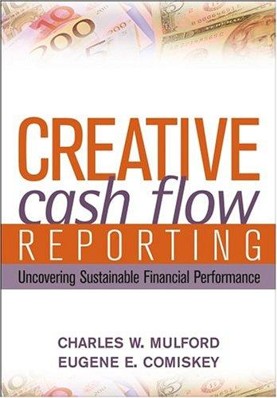

查尔斯·马尔福德（Charles W. Mulford）和尤金·科米斯基（Eugene E. Comiskey）均为佐治亚理工学院（Georgia Institute of Technology）的会计学教授。两人长期合作研究财务报表分析和盈余质量，此前已合著过《The Financial Numbers Game》（探讨盈利操纵手法）。《创造性现金流报告》（Creative Cash Flow Reporting）于2005年由约翰·威利出版社（John Wiley & Sons）出版，专门聚焦于一个当时被严重忽视的领域：现金流量表的操纵与粉饰。许多投资者和分析师习惯性地将经营性现金流视为比净利润更可靠的业绩指标，认为"现金不会说谎"。马尔福德和科米斯基在这本书中系统地证明了这一假设的危险性。
全书的核心论点是：现金流量表虽然在会计准则下比利润表更难被操纵，但绝非不可操纵。两位作者详细拆解了企业管理层用来夸大经营性现金流的各种手法。其中最常见的包括：将应收账款出售给第三方（保理或证券化），使应收账款从资产负债表上消失，从而在经营活动现金流中制造出虚假的现金流入；通过延长应付账款的支付周期来人为压低经营活动现金流出；将本应归类为经营活动的现金流出重新归类为投资活动（例如将软件开发支出资本化而非费用化）；以及利用收购交易的时机来操纵营运资本变动。两位作者还分析了企业如何通过"非经常性项目"的灵活分类来使核心经营现金流看起来比实际情况更好。每一种手法都配有真实上市公司的案例分析，使读者可以看到这些操纵行为在实际财报中的具体表现形式。
本书可视为霍华德·施利特（Howard Schilit）《Financial Shenanigans》（《财务诡计》）的姊妹篇，但二者的侧重点不同。《财务诡计》涵盖面更广，涉及盈利操纵、现金流操纵和关键指标操纵三大类别，而《创造性现金流报告》则将全部篇幅集中于现金流这一个维度，因此在深度和细节上远超前者。马尔福德和科米斯基不仅列举了操纵手法，还提供了一套系统的分析工具——他们教读者如何通过交叉比对利润表、资产负债表和现金流量表之间的勾稽关系来识别异常信号。例如，当一家公司的经营性现金流持续大幅高于净利润，而应收账款周转天数却在恶化时，投资者就应警觉是否存在应收账款证券化或其他现金流粉饰行为。
对于从事基本面分析的投资者而言，这本书填补了财务分析训练中一个重要的知识空白。多数投资者在学习财务分析时将大量精力放在利润表和估值模型上，对现金流量表的分析往往停留在"自由现金流等于经营现金流减去资本支出"这种粗略层面。马尔福德和科米斯基的工作提醒我们，不加甄别地信任现金流数据与不加甄别地信任净利润数据一样危险。在A股市场上，应收账款证券化、延长付款周期、资本化支出等现金流粉饰手法同样普遍存在，这本书提供的分析框架具有直接的实用价值。